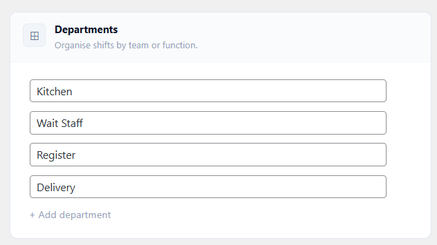
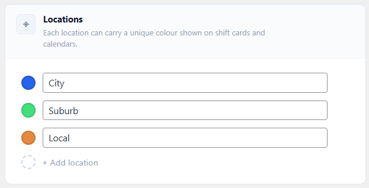
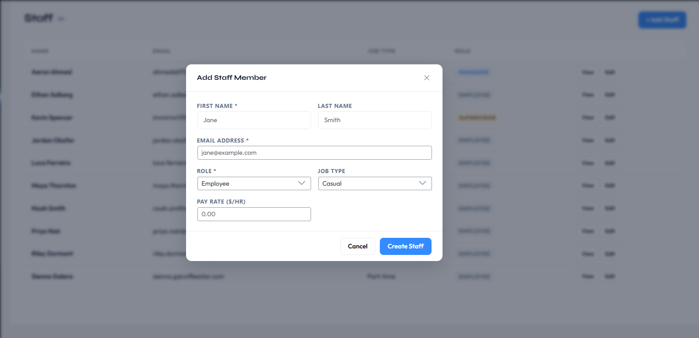
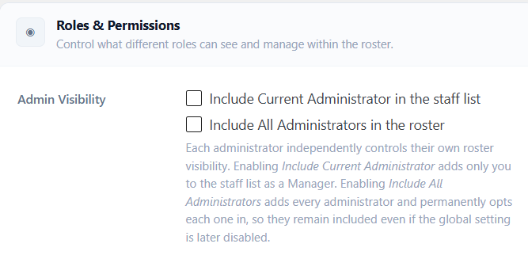
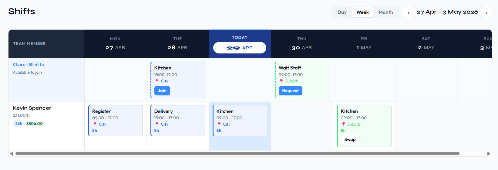
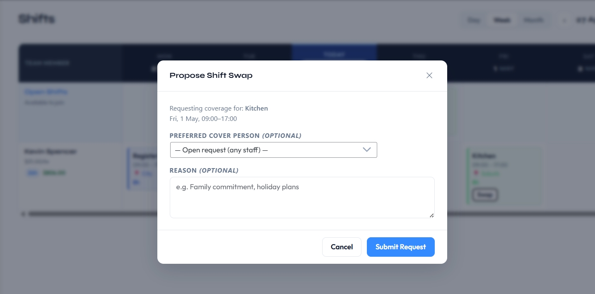
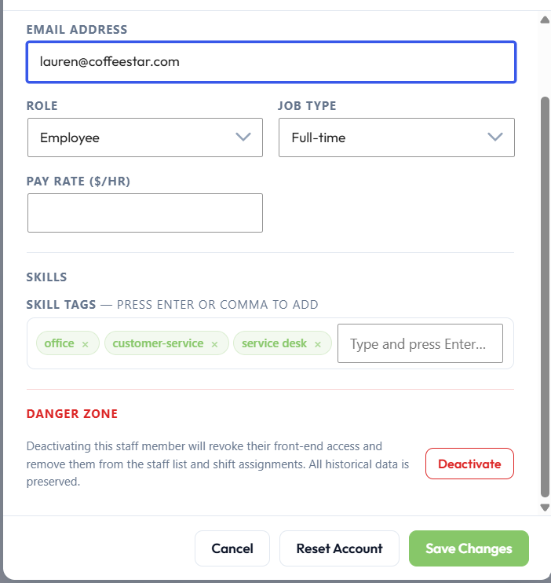
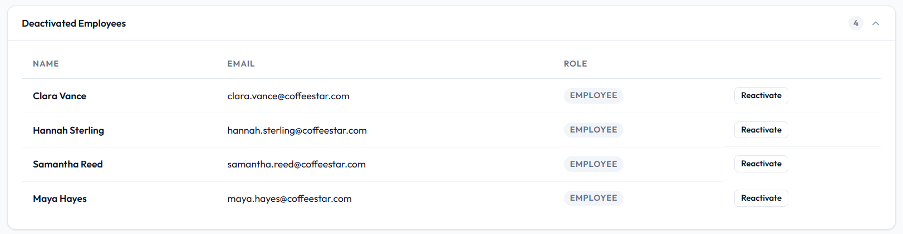
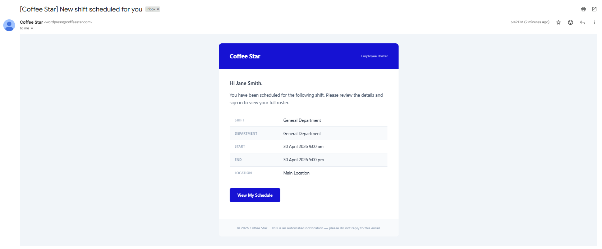
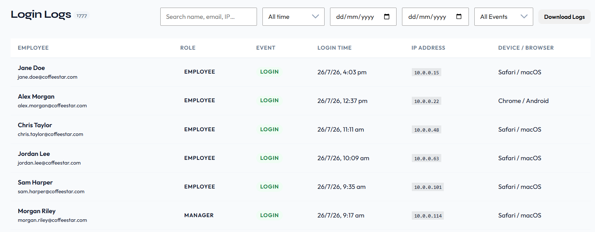

Requirements
Employee Roster is entirely self-hosted and stores all data in your own WordPress database with no external API dependencies or SaaS connections. Before installing, verify your environment meets the following minimum versions.
| Component | Requirement |
|---|
| WordPress | 5.8 or later |
| WordPress (tested up to) | 7.0 |
| PHP | 7.4 or later |
| MySQL / MariaDB | No plugin-specific minimum whatever your WordPress version requires |
| External services | None. All data is stored in your own WordPress database; nothing is sent to a third-party server. |
ℹ️
The free and premium versions have identical requirements upgrading to a paid plan does not require a newer version of WordPress or PHP.
ℹ️
Most modern WordPress hosting satisfies these requirements. If you are unsure, check your hosting control panel under PHP version and database settings before activating the plugin.
Installation
Installation follows the standard WordPress plugin process. On first activation, the plugin automatically creates all database tables, registers the roster roles, seeds default settings, and creates the five frontend portal pages with no manual setup required.
- Upload the
emp-roster folder to /wp-content/plugins/, or install the ZIP through Plugins > Add New > Upload Plugin.
- Activate the plugin via Plugins > Installed Plugins.
- On activation the plugin automatically:
- Creates 8 custom database tables (
shifts, assignments, leave, attendance, availability, swap_requests, leave_balances, login_logs)
- Registers the roster roles
emr_manager, emr_supervisor, and emr_employee on paid plans; the free WordPress.org version registers emr_employee only
- Seeds default settings, one department (General Department) and one location (Main Location)
- Creates 5 WordPress pages pre-loaded with the frontend portal shortcodes
- The setup wizard opens automatically the first time an administrator visits an EmpRoster screen. See Setup Wizard.
- Add your staff at EmpRoster > Staff > + Add Staff, then create your first shift at EmpRoster > Shifts > + New Shift.
📋
The five frontend pages created on activation are: EmpRoster – Dashboard, – My Shifts, – Leave, – Clock In/Out, and – Availability. Their addresses are listed in Settings > Frontend Pages. If you delete any of these pages, you can recreate them by placing the relevant shortcode on any WordPress page. See Shortcode Pages for the full shortcode list.
Setup Wizard
The setup wizard opens automatically the first time a WordPress administrator visits an EmpRoster screen after activation. It walks through the settings that matter on day one. Every step can be skipped, and everything it sets can be changed later in EmpRoster > Settings.
| Step | What you set |
|---|
| Welcome | Introduction only nothing to configure |
| Company Details | Company name, brand colour, and the day your roster week starts on |
| Locations | Your work locations, each with a colour used on shift cards and calendars |
| Departments | Your teams or business functions |
| Employment Types | Standard weekly hours for full-time (default 38) and part-time (default 24). Casual has no fixed limit |
| Leave Management Starter+ | Turn the leave module on or off, enable balance tracking, and set annual and sick leave days for full-time and part-time staff |
| Features & Permissions | Clock In/Out, Pay Rates & Payroll, Email Notifications, employee/supervisor login, public roster shortcode |
| Done | Shortcuts to add staff, create a shift, or review all settings |
The free WordPress.org version runs a 7-step wizard the Leave Management step is not included, because the leave module is a paid feature.
📋
To run the wizard again at any time, go to EmpRoster > Settings and click Setup Wizard in the top right of the page.
✅
After the wizard, your first two jobs are: add your staff (EmpRoster > Staff > + Add Staff) and create your first shift (EmpRoster > Shifts > + New Shift).
Quick Start
Follow these five steps to go from a fresh install to a working roster. Each step takes only a few minutes once the plugin is activated.
- Create departments: Go to EmpRoster > Settings > Departments and add your departments. Departments are unlimited on every version and plan.

- Create locations: In Settings > Locations, add location names and pick a colour for each. The colour is used on shift cards and in the calendar views.

- Add staff: Go to EmpRoster > Staff > + Add Staff. Assign each person a role (Manager, Supervisor, or Employee paid plans), a job type (Full-time, Part-time, or Casual), and an hourly pay rate (when payroll is enabled). A WordPress user account is created automatically.

- Create a shift: Open EmpRoster > Shifts and click + New Shift. Fill in the department, location, start and end times, break duration, and assignment type. Assign employees directly or publish the shift as an open shift for staff to claim (Starter+).
- Employees log in: Staff can use the WordPress admin or the frontend portal pages to view their roster, submit leave requests, clock in/out, and set their weekly availability.
✅
All five steps together typically take under 15 minutes on a fresh install. You can return to Settings at any time to adjust departments, locations, payroll, and notification options.
The EmpRoster Menu
Everything the plugin does lives under the EmpRoster item in the WordPress admin sidebar. Which sub-items appear depends on the user's role, the plan, and which features are switched on in Settings.
| Menu item | Who sees it |
|---|
| Dashboard | Everyone |
| Shifts | Everyone |
| Attendance | Everyone Starter+ and only while self clock-in is switched on |
| Timesheets | Everyone (staff see only their own) |
| Requests | Everyone paid plans, and only while the leave module is on |
| Staff | Managers, supervisors, administrators |
| Profile | Everyone |
| Login Logs | Managers Professional+ and only while login logs are switched on |
| Settings | Managers and administrators |
A cleaner admin for roster users
Managers, supervisors and employees who are not WordPress administrators see only the EmpRoster menu when they log in all other plugin menus, dashboard widgets and plugin notices are hidden from them. Administrators always see the full WordPress admin. Roster users are also redirected straight to the EmpRoster dashboard after logging in, rather than the standard WordPress dashboard. See Hidden WordPress UI.
Updating the Plugin
Plugin updates are delivered through the standard WordPress update mechanism. All data staff accounts, shifts, attendance records, leave history, settings, and licence information is fully preserved across updates.
Applying an update
When a new version of Employee Roster is available, a notification appears in WordPress Admin > Dashboard > Updates and on the Plugins screen. Click Update Now to apply it. No manual preparation is needed before updating.
Auto-deactivation during the update process
WordPress briefly deactivates the plugin during the file-replacement step of an update. This is standard WordPress behaviour and is handled transparently no manual deactivation or reactivation is required before or after the update. The plugin reactivates automatically once the new files are in place.
When the updated plugin loads for the first time after a version change, it runs an internal upgrade routine that applies any required database schema migrations. This routine is safe to run on a live site: it is idempotent, runs only when a version increment is detected, and does not modify or delete existing data.
📋
No manual steps are required before or after applying a plugin update. All settings, staff accounts, shifts, and historical records are preserved automatically. If you run a staging/production workflow, test the update on staging before applying it to the live site.
Seamless plan upgrades
Upgrading your licence plan (for example, from Starter to Professional) does not require a plugin update or any WordPress configuration change. Once the upgraded licence is verified, plan-gated features become available immediately on the next page load with no manual re-enabling needed.
If settings or data that were previously constrained by a lower plan already exist, they are restored automatically the moment the upgrade is applied. Downgrading to a lower plan does not delete data above the new limits; it only blocks the creation of new entries beyond the cap. See Staff Account Limits by Plan for the full breakdown.
Custom Roles Overview
The paid plans register three custom WordPress roles on activation. These roles determine what each user can see and do within the plugin, and they also control the WordPress admin experience; roster users see only the Employee Roster menu, not the full WordPress dashboard.
📋
Free version: the WordPress.org version registers the Roster Employee role only. There is no manager or supervisor role of any kind you run the roster yourself from your own WordPress Administrator account, which has full access to every roster feature. Paid plans add dedicated Manager and Supervisor roles so you can delegate roster management to other staff members without granting them full WordPress Administrator access.
| Role | Display Name | Description |
|---|
emr_manager | Roster Manager | Full roster management access: create/edit/delete shifts, assign staff, manage staff accounts, approve leave and requests, edit attendance, manage settings, view payroll |
emr_supervisor | Roster Supervisor | Read-only elevated role. Sees the whole roster, all staff, attendance and analytics, and can submit their own leave, swap and open-shift requests but cannot create shifts, assign people, or approve anything |
emr_employee | Roster Employee | View own shifts, clock in/out, submit leave, set availability, claim open shifts |
Who can create which role
- Only a WordPress administrator can create, promote, demote or deactivate a Manager account, or reset a manager's password. This prevents one manager locking out another.
- The Manager role can be assigned on Professional+. On Starter, use Settings > Roles & Permissions > Admin Visibility to include your own administrator account in the roster as a Manager instead. Managers created on a higher plan keep the role if the site drops to Starter.
- Supervisor accounts: up to 2 on Starter, unlimited on Professional+.
- Employee accounts are unlimited on every plan.
- Nobody can change their own role, and administrators' email addresses cannot be edited through the roster.
WP Administrators retain full access to all Employee Roster features in addition to their normal WordPress capabilities. Administrators are not included as roster staff by default. See Admin Inclusion Settings to change this.
📋
Role assignment happens at the WordPress user level. When you create a staff member through EmpRoster > Staff > + Add Staff, the plugin automatically assigns the correct WordPress role to the newly created user account.
Custom Capabilities
Each role is granted a specific set of WordPress capabilities that gate access to individual plugin features. These capabilities are checked throughout the plugin backend and frontend to determine what each user can see and do.
| Capability | Granted To |
|---|
emr_view_own_shifts | All roles |
emr_clock_in_out | All roles |
emr_submit_leave | All roles |
emr_manage_availability | All roles |
emr_request_swap | All roles |
emr_view_all_staff | Manager, Supervisor, Admin |
emr_view_all_shifts | Manager, Supervisor, Admin |
emr_view_reports | Manager, Supervisor, Admin |
emr_manage_shifts | Manager, Admin |
emr_approve_leave | Manager, Admin |
emr_edit_attendance | Manager, Admin |
emr_manage_settings | Manager, Admin |
Capability matrix by role
| Action | Employee | Supervisor | Manager | WP Admin |
|---|
| View own shifts | ✓ | ✓ | ✓ | ✓ |
| Clock in / out | ✓ | ✓ | ✓ | ✓ |
| Submit leave | ✓ | ✓ | ✓ | ✓ |
| Set own availability | ✓ | ✓ | ✓ | ✓ |
| Claim open shifts | ✓ | ✓ | ✓ | ✓ |
| View all staff | ✗ | ✓ | ✓ | ✓ |
| View attendance records | ✗ | ✓ | ✓ | ✓ |
| View reports / analytics | ✗ | ✓ | ✓ | ✓ |
| Manage the roster (create/edit/delete shifts) | ✗ | ✗ | ✓ | ✓ |
| Assign staff to shifts | ✗ | ✗ | ✓ | ✓ |
| Approve leave and requests | ✗ | ✗ | ✓ | ✓ |
| Edit attendance records | ✗ | ✗ | ✓ | ✓ |
| Manage settings | ✗ | ✗ | ✓ | ✓ |
Whether supervisors can see other people's pay rates is controlled by a separate setting Settings > Roles & Permissions > Supervisor Pay Rate Professional+, off by default.
Capabilities are independent of plan gating. A Starter-plan Manager has emr_manage_settings capability granted, but plan-gated settings within the Settings page (such as the public roster shortcode) still display an upgrade prompt on lower plans.
Admin Inclusion Settings
EmpRoster provides two settings that control whether WordPress administrator accounts appear in the staff list: a per-administrator personal toggle and a global override that includes all administrators at once. For full details on how these settings interact and what happens when the global setting is disabled, see Admin Visibility (Per-Administrator Control).
Admin Visibility
Available to WordPress Administrators only. Roster Managers do not see this setting.
The Admin Visibility settings control whether WordPress administrator accounts appear in the EmpRoster staff list as Managers. Because administrators are not roster staff by default, these two settings let each administrator independently decide their own participation, with an optional global override to include all administrators at once.
Navigate to EmpRoster > Settings > Roles & Permissions to find the Admin Visibility section. These settings are visible only to WordPress Administrators Roster Managers do not see this section.

The Two Settings
| Setting | Scope | Description |
|---|
| Include Current Administrator in the staff list |
Per-administrator |
When enabled, only the currently logged-in administrator account is added to the EmpRoster staff list as a Manager. Each administrator controls this independently enabling it for one admin has no effect on any other admin account. |
| Include All Administrators in the roster |
Global override |
When enabled by any administrator, all WordPress administrator accounts are automatically added to the EmpRoster staff list as Managers. Acts as a global switch that overrides individual settings. |
How Per-Administrator Inclusion Works
Each WordPress administrator controls their own roster participation independently via the Include Current Administrator in the staff list toggle.
When an administrator enables this setting and saves:
- Only that specific administrator account is added to the staff list
- They appear throughout EmpRoster with the Manager role in the roster view, staff list, analytics, timesheets, dashboards, and all manager-based queries
- A confirmation message appears on the Settings page confirming the current administrator is now included as a Manager
- The setting state is stored per administrator account it persists across sessions and is not affected by other administrators changing their own setting
When an administrator disables this setting and saves:
- Only that administrator is removed from the staff list
- All other administrators' inclusion settings remain unchanged
- Historical records (attendance, leave, shifts) for that administrator are preserved
Because this setting is per-account, two administrators on the same site can have different states one included in the roster, one not without any conflict.
How Global Inclusion Works
The Include All Administrators in the roster setting acts as a global override that affects every WordPress administrator account on the site simultaneously.
When the global setting is enabled:
- All WordPress administrator accounts are immediately added to the EmpRoster staff list as Managers
- In the background, each administrator's personal Include Current Administrator in the staff list setting is permanently synced to enabled so every admin now has their individual setting turned on
- On the Settings page, both toggles appear checked for every administrator who views the page, because all admins are globally included
When the global setting is later disabled:
Disabling the global setting does not remove administrators from the roster. Because each administrator's personal inclusion setting was already enabled during the global inclusion process, all administrators remain individually included as Managers.
After the global setting is turned off:
- Each administrator retains their personal Include Current Administrator in the staff list setting in the enabled state
- Administrators continue to appear in the roster as Managers
- Each administrator may independently disable their own personal setting if they wish to be removed from the roster
- No administrator is removed automatically removal requires each admin to manually disable their own personal toggle
📋
This design ensures that turning off the global setting is non-destructive it does not silently remove managers from active rosters or break existing shift assignments.
State Combinations Reference
| Include Current Admin | Include All Admins | Result |
|---|
| Off | Off | This administrator does not appear in the roster. Other admins unaffected. |
| On | Off | Only this administrator appears in the roster as a Manager. |
| On (synced) | On | All administrators appear in the roster as Managers. Both toggles show as checked for every admin. |
| On (retained) | Off (disabled after global was on) | This administrator remains in the roster because their personal setting was synced on during global inclusion. They can disable their personal toggle to opt out. |
Where Admin Inclusion Takes Effect
When an administrator is included in the roster, they appear as a Manager throughout EmpRoster:
- Staff list shown in EmpRoster > Staff with the Manager role badge
- Roster views appear as a staff row in weekly, day, and monthly views when shifts are assigned
- Shift assignment available for selection when assigning shifts
- Analytics included in timesheet summaries, payroll calculations, and labour cost totals
- Dashboard counted in KPI cards and manager-scope queries
- Permissions treated as a Roster Manager for all in-plugin permission checks
Important Considerations
- These settings only affect WordPress administrator accounts. Regular Roster Manager accounts (
emr_manager role) are always included in the staff list and are unaffected by these settings.
- Enabling Admin Visibility does not change the administrator's WordPress role they remain a WordPress Administrator. EmpRoster simply includes them in roster queries and treats them as a Manager within the plugin.
- If a WordPress administrator account is deleted, their EmpRoster records (shifts, leave, attendance) follow standard WordPress user deletion behaviour.
- The Admin Visibility section is not visible to Roster Managers only WordPress Administrators can see and change these settings.
Hidden WordPress UI
When a Roster Manager, Supervisor, or Employee logs into the WordPress admin, the plugin hides all standard WordPress UI elements that are irrelevant to rostering. The user sees only the Employee Roster menu in the left admin sidebar.
What is hidden
- All WordPress admin menu items except Employee Roster
- The WordPress dashboard home page and all its widgets
- Plugin-originating admin notices (notices from other installed plugins)
Why this matters
Showing the full WordPress admin to roster users would expose information about other installed plugins, site settings, and WordPress internals that roster staff have no reason to see. Hiding this UI reduces confusion and prevents accidental disclosure of your site configuration.
📋
WP Administrators always see the full WordPress admin interface regardless of this behaviour. This setting applies only to the three custom roster roles: Manager, Supervisor, and Employee.
Creating Shifts
Navigate to EmpRoster > Shifts and click + New Shift (managers and administrators only). A shift modal opens where you fill in the details and assign employees before saving.
| Field | Description |
|---|
| Department | Chosen from the departments configured in Settings. Shown on the shift card as the shift's label |
| Location | Chosen from your configured locations; sets the shift's colour on cards and calendars |
| Start / End | Required. New shifts default to tomorrow, 09:00–17:00 |
| Assignment Type | Direct assign staff directly; Open any employee can join Starter+; Open with Approval manager must approve Starter+ |
| Slot Limit | Open shifts only. Unlimited, or 1–20. Defaults to 1 |
| Break Duration | No break or 5-minute increments up to 120 minutes. Defaults to 30 minutes. Deducted from hours worked in payroll and timesheets |
| Notes | Up to 256 characters, visible to the assigned staff |
| Job Sheet | Professional+, when enabled attach a PDF, JPG or PNG up to 2 MB |
| Assign Staff | Direct shifts only. Tick the people working the shift; a search box appears once you have more than four staff |
Automatic checks when you assign people
- Availability check. If someone you have ticked has marked themselves unavailable on that weekday, a warning naming them appears and the save pauses. Click Save again to assign them anyway it is advice, not a block.
- Conflict check. The server refuses to create a shift that double-books someone, or that rosters someone on a day they have approved leave. You get a message naming the clash.
📋
One record per person. Assigning several people to one direct shift creates one independent shift record per person, so editing or deleting one person's shift never disturbs anyone else's. Open shifts are the exception: they are a single shared record whose slot limit controls how many people can join.
📋
No shift limit: every version, including the free version on WordPress.org, supports an unlimited number of shifts.
Assignment Types (Direct vs Open)
Each shift uses one of three assignment modes. The mode is selected in the shift modal at creation time and can be changed when editing a shift.
Direct Assignment
The manager selects specific employees from the staff list when creating or editing the shift. Assigned employees receive a shift assignment email immediately (if notifications are enabled). When multiple employees are assigned to a direct shift, each employee gets their own independent shift record; editing or deleting one employee's shift does not affect any other employee's record. Direct assignment is available on every version, including the free version.
Open and Open with Approval
Starter+
Open shifts require the Starter plan or above the assignment type selector offers Direct only in the free version. The shift is published with a configurable slot limit and staff pick it up themselves:
- Open the first employees to click Join are confirmed immediately, up to the slot limit.
- Open with Approval clicking Request creates a pending request for a manager to approve or decline.
See Open Shifts for how open shifts appear on the roster and how requests are reviewed.
Admin/Manager: Creating an open shift with approval:
Employee: Claiming an open shift:

Employee: Requests for open shift:
Admin/Manager: Accepting a request for an open shift:
📋
Use Direct when you know exactly who is working a shift. Use Open when you need to fill a slot and want employees to self-select, for example for casual or on-call positions.
Roster Views (Day, Week, Month)
The roster at EmpRoster > Shifts has three views, switched with the Day / Week / Month buttons in the toolbar. All three are available on every version, including the free version. Arrows either side of the date label move backwards and forwards through time.
Day View
A single compact column showing every shift on one day, with shift cards reflowed into a two-column grid. Useful when you only care about what is happening today.
Week View
A grid of staff rows versus day columns for the selected week. Each cell shows the shift cards assigned to that employee on that day department (or title), time, location colour, and duration.
Staff visibility: Only staff members who have at least one shift assigned in the selected week are displayed; employees with no shifts in that window are automatically hidden to keep the view focused. Employees always see their own row regardless of this rule.
Weekly hours and warnings: Each staff row shows their total hours for the week, with a ⚠ warning when those hours exceed the weekly limit configured for their employment type.
Unassigned and open shifts: Open shifts appear in a dedicated Open Shifts row pinned above the staff rows. Direct shifts with no assigned employees also appear there for managers with an "Unassigned" badge, so no shift is ever silently hidden.
Month View
A calendar of all shifts in the month. Each day cell shows shift summaries with colour-coded badges, and today's cell is highlighted. Approved leave appears as an amber card.
Toolbar filters
Managers also get an All Locations filter and an All Skills filter (Professional+, since skill tags are a Professional feature) in the roster toolbar.
Today Indicator
In both the weekly roster and monthly calendar views, the current day receives a distinct highlighted background. The day column header displays "Today" instead of the date string, and individual shift rows for today also display "Today" in their date column.
Open Shifts
Starter+
Open shifts require the Starter plan or above. Instead of assigning a shift to a named person, you publish it and let staff pick it up. Set the shift's Assignment Type to Open or Open with Approval when creating it.
How they appear on the roster
- Open shifts sit in a dedicated Open Shifts row pinned above the staff rows, showing Available to join to staff and Open & unassigned to managers.
- When the slot limit is above one, shifts show how many slots remain, and disappear from the row once they are full.
- Employees never see open shifts whose start time has already passed. Attempting to join a shift that has already started returns a clear error.
Joining and requesting
- Open the first employees to click Join are confirmed immediately, up to the slot limit, and receive a shift assignment email.
- Open with Approval clicking Request creates a pending request. Managers are emailed, flagged Pending your approval.
Supervisors can claim and request open shifts as well as employees.
Reviewing requests
Requests are reviewed under EmpRoster > Requests > Open Shift Requests, which lists every request pending, approved, declined, cancelled, expired with Approve and Decline buttons on the pending ones.
📋
When a manager approves the request that fills the last slot, any remaining pending requests for that shift are declined automatically and the manager is told how many.
Copy Roster
Starter+
Copy Roster requires the Starter plan or above. If your weeks look alike, build one and repeat it. On the Shifts page click Copy Roster.
| Field | Notes |
|---|
| Source From / Source To | The date range to copy. Defaults to the current week |
| Destination Start | Where the copy lands. Defaults to next Monday |
| Repeat | Copy the block 1–12 times in a row |
What is and is not copied
- Only direct assigned shifts are copied open shifts are skipped.
- Assignments carry over as-is, except that deactivated staff are left out.
- A shift whose only assignees have all been deactivated is not copied at all.
📋
Copied shifts are ordinary shifts they can be edited or deleted individually afterwards, and the same conflict and leave checks apply as when creating a shift by hand.
Shift Confirmation
Starter+
Shift Confirmation requires the Starter plan or above and is not present in the free version. When it is on, staff accept or decline the shifts they are assigned, so you know who has seen and agreed to each shift. Turn it on or off under EmpRoster > Settings > Shift Confirmation.
How it works
- New assignments show as Pending until the employee responds. The roster shows each person's response.
- Employees can Accept or Decline a shift, with an optional reason.
- The Dashboard menu shows a badge with the number of upcoming shifts waiting for a response. It updates without reloading the page.
- Once a shift has started, it can no longer be accepted or declined.
When a shift is declined
Declining does not remove anyone from a shift. The shift stays on the roster marked Declined until a manager does one of the following:
- reassigns the shift to someone else
- removes the employee from the shift
- asks the employee to respond again
Managers can also accept a shift on an employee's behalf.
Time changes
If a manager moves a shift's start or end time, assigned staff are asked to confirm the new time.
Emails
When email notifications are on:
- While a response is pending, the employee's shift emails ask them to sign in and respond.
- Managers can choose to be emailed when a shift is declined (on by default) or accepted (off by default).
Turning it on or off
When you turn Shift Confirmation on, existing assignments are treated as accepted, so nobody is asked to confirm shifts already on the roster.
📋
Turning Shift Confirmation off hides every confirmation status and stops the related emails. Responses already given are kept and reappear if you turn it back on. While it is off, new assignments are recorded as accepted. The same applies if a paid licence lapses: stored responses are kept and return when you renew.
Editing & Deleting Shifts
Click any shift block in the weekly or monthly view, or any row in the list view, to open the shift modal. Managers can edit all shift fields, reassign employees, or delete the shift from within the same modal.
Editing a Shift
Clicking a shift opens its detail card. Managers get Edit, Assign and Delete. All fields set at creation (department, location, start/end, assignment type, break duration, slot limit, notes, and job sheet attachment) are fully editable after saving. Reassigning employees (adding or removing assignees) can also be done from the edit modal at any time.
✉️
Timing change notification: If you change a shift's start or end time, all currently assigned employees automatically receive a Shift Timing Change email (if email notifications are enabled). This fires on save, so employees are notified immediately. If
Shift Confirmation is on, assigned staff are also asked to confirm the new time.
Deleting a Shift
The delete button is available inside the shift modal. Deleting a shift permanently removes the shift record and all its assignment records. This action cannot be undone.
⚠️
Warning: Deleting a shift removes all employee assignments for that shift. If you only need to remove one employee from a shift, use the reassignment controls in the edit modal rather than deleting the whole shift.
Shift Limits
There is no shift limit on any version or plan. Earlier releases capped the number of "active" (today or future) shifts on lower tiers; that cap was removed and no shift limit is enforced anywhere in the plugin today including the free WordPress.org version.
Active shifts on the dashboard
The term active shift still appears on the dashboard, where it is a simple count rather than a quota: it counts shifts whose date is today or in the future. Navigate to EmpRoster > Dashboard and the KPI tiles show the active shift count, shifts today, and total staff. Past shifts are retained indefinitely and are never deleted to make room.
Clocking In and Out
Starter+
Clocking in and out requires the Starter plan or above. In the free version, the Attendance menu item and the frontend clock page ([empr_attendance]) are absent entirely no upgrade prompt is shown to employees. On Starter and above, employees navigate to EmpRoster > Attendance in the WP admin, or visit the frontend clock page, to start and end a clock session. Only one active clock-in session is permitted per user at a time; starting a new session while one is already open is blocked.
The clock panel
EmpRoster > Attendance shows a clock dial with the person's current state and a single big button.
- Clock In starts a session. EmpRoster checks today's schedule and tells you how you are doing: "You're clocking in early your shift starts at 9:00 AM", "You're 12 minutes late your shift started at 9:00 AM", or "Clocked in no scheduled shift found for today." The threshold either side is 10 minutes.
- Clock Out offers an optional Notes field (256 characters) and closes the session. The break is taken from the linked shift's configured break duration.
What the system records
Each attendance entry stores the following fields:
- Clock-in timestamp: recorded when the employee clicks Clock In
- Clock-out timestamp: recorded when the employee clicks Clock Out; empty while the session is still open
- Break minutes: taken from the linked shift; deducted from total hours worked in timesheets
- Optional notes: free-text field (256 characters) the employee can fill in at clock-out
- Associated shift: the scheduled shift the session is matched to, when there is one
Clock history
Below the dial sits the history My Clock History for staff, Recent Attendance for managers and supervisors (most recent 100 records) showing clock in, clock out, break, net hours, notes and status.
⚠️
Warning: Anti-abuse lockout: completing three clock-in/out cycles within 30 minutes locks clock-in for 30 minutes. The panel shows a lock with the minutes remaining.
📋
Managers can always view and correct attendance records regardless of whether self clock-in/out is enabled. The Self-Clock Setting only controls employee-facing access.
Self-Clock Setting
Starter+
The Allow self clock-in/out setting in EmpRoster > Settings > Roster & Attendance controls whether employees can record their own attendance. It is enabled by default.
📋
This setting only applies on the Starter plan and above. In the free version, the Attendance feature is unavailable entirely and this setting has no effect.
When enabled
- The Attendance menu item is visible in the WP admin.
- The frontend clock page (
[empr_attendance]) is active.
- Employees clock themselves in and out, adding optional notes at clock-out.
- Timesheet hours are taken from the recorded clock sessions.
When disabled
- The Attendance menu item and the clocking panel disappear entirely.
- Hours are derived from the scheduled shift times instead useful if you roster people but do not run time clocks.
- Managers can still record and correct attendance entries on behalf of staff.
📋
Disabling self clock-in/out does not affect existing attendance records. Managers always retain full access to view and edit all attendance entries regardless of this setting.
Attendance Management (Managers)
Starter+
Attendance management requires the Starter plan or above. In the free version, the Attendance feature is unavailable entirely. Managers and supervisors see a Recent Attendance table (the most recent 100 records) below the clock dial at EmpRoster > Attendance, covering every staff member's clock history. Hours also roll up into EmpRoster > Timesheets.
What managers can do
- View the clock-in/out history for any employee, with clock in, clock out, break, net hours, notes and status
- Correct a clock-in time, clock-out time, or break on any record
- Remove incorrect or duplicate records
- Review the resulting hours and earnings per employee in Timesheets
📋
Supervisors can view attendance records but cannot edit them editing requires the emr_edit_attendance capability, which is granted to Managers and WP Administrators only.
Requests
Starter+
The Requests page consolidates all staff request types into a single location. Access it from EmpRoster > Requests in the WordPress admin sidebar, or from the Requests link in the in-plugin navigation.
The page contains three independently paginated sections:
| Section | Plan | Who submits | Who approves |
|---|
| Leave Requests | Starter+ | Employees, Supervisors, Managers | Managers, Admins |
| Open Shift Requests | Starter+ | Employees, Supervisors | Managers, Admins |
| Shift Swap Requests | Professional+ | Employees, Supervisors | Managers, Admins |
Each section shows 10 entries per page with its own Prev/Next pagination controls navigating one section does not affect the others.
Pending count badge
The Requests menu item displays a red badge showing the total number of pending items across all three sections relevant to the current user's role. The badge updates whenever the dashboard or Requests page is loaded.
Plan availability
The Requests page requires the Starter plan or above, and only appears while the leave module is switched on in Settings > Leave & Accrual. In the free version, the Requests menu item is hidden entirely for all roles. Leave submission and open shift claiming require Starter or above; shift swaps require Professional or above.
Frontend access
Employees on Starter+ can submit leave requests from the frontend EmpRoster – Leave page. The shortcode [empr_leave] renders the leave submission form for authenticated employees.
Leave Requests
Starter+
Submitting a Leave Request
Click + Request Leave on EmpRoster > Requests, or use the frontend EmpRoster – Leave page. Fields:
| Field | Options |
|---|
| Leave type | Annual Leave, Sick Leave, Personal Leave, Unpaid Leave, Other |
| Start date | Date picker |
| End date | Date picker |
| Reason | Optional, up to 512 characters |
On submission:
- The request appears in the Leave Requests section of the Requests page with a Pending status
- An automatic email notification is sent to all active Roster Managers (when notifications are enabled)
- Employees can Withdraw their own pending requests at any time before a decision is made
📋
Employees cannot request leave starting in the past. Managers can, so they are able to record leave after the fact.
📋
When leave balances are enabled Starter+, the annual leave form shows how many days the employee has and warns them before they overspend and the server refuses the request if they do.
Approval Workflow
Managers see all pending leave requests in the Leave Requests section of EmpRoster > Requests. Each request shows the employee name, leave type, dates, reason, and current status.
Managers can:
- Approve request status changes to Approved; the employee receives an email with the decision
- Decline request status changes to Declined; the employee receives an email with the decision
- Edit change the type, dates, reason or status of any request
- Delete remove any request
Approving annual or sick leave deducts from the employee's balance where balances are enabled; declining or deleting previously-approved leave restores it.
📋
Approved leave appears on the roster grid and month calendar as an amber card, and blocks anyone from being rostered on those days. Supervisors can see leave requests but cannot approve them.
Leave Request Statuses
| Status | Meaning |
|---|
| Pending | Submitted, awaiting manager review |
| Approved | Approved by a manager deducted from balances and blocked out on the roster |
| Declined | Declined by a manager |
| Withdrawn | Cancelled by the employee before a decision was made |
| Cancelled | Cancelled automatically for example when the employee is deactivated |
Open Shift Requests
Starter+
Open Shift Requests appear when an employee or supervisor requests a slot on an Open with Approval shift. Managers review these requests from the Open Shift Requests section of EmpRoster > Requests. This feature requires the Starter plan or above.
How Employees Claim Open Shifts
Eligible employees and supervisors see open shifts in the Open Shifts row of the roster view. What happens next depends on the shift's assignment type:
- Open clicking Join confirms the employee immediately, up to the slot limit. Managers are emailed, flagged Auto-confirmed.
- Open with Approval clicking Request creates a pending request, managers are emailed flagged Pending your approval, and the shift shows as Pending for that employee until a manager reviews it.
Manager Review
Managers see every request pending, approved, declined, cancelled, expired in the Open Shift Requests section. Each entry shows the shift, date, time, and the requesting employee's name.
Managers can:
- Approve the employee is assigned to the shift and receives a shift assignment email
- Decline the request is rejected; the slot remains available for others
📋
When a manager approves the request that fills the last slot, all remaining pending requests for that shift are declined automatically and the manager is told how many. Fully-filled shifts disappear from the Open Shifts row so nobody can claim beyond the limit.
Past Shifts
Past shifts are not shown to employees in the Open Shifts row or month calendar. Attempting to join a shift that has already started returns a clear error message.
Shift Swap Requests
Professional+
Shift swap requests require the Professional plan or above. The feature lets employees formally request that a shift be reassigned to another employee, subject to manager approval. Employees cannot swap shifts directly without a manager approving the request.
Shift Swap Requests appear as the third section on the EmpRoster > Requests page, below Leave Requests and Open Shift Requests. Each section is independently paginated.
How to Submit a Swap Request
A Swap button appears on an employee's own future shifts in the roster. In the request form they can:

- Optionally pick a preferred cover person from their colleagues
- Add an optional reason for the swap (visible to the reviewing manager)
If no cover person is specified, the request is open, meaning any eligible employee could potentially take the shift. The submitted request immediately appears in the Shift Swap Requests section with a Pending status, and employees can Withdraw their own pending requests.
📋
Swaps cannot be requested for shifts on a past date, and a swap that would put someone on a day they have approved leave is refused.
📋
In the free version and on the Starter plan, the Request Swap button is hidden from shift detail views. No upgrade prompt is shown to employees; the feature is silently omitted for plans that do not support it.
Manager Review
Managers see all pending swap requests in the Shift Swap Requests section of the Requests page. Each entry shows the requesting employee, the shift they want to give up, and the target employee (if one was specified in the request).
Approving a swap
When a manager approves a swap, the plugin automatically reassigns the two shifts between the employees involved. No manual editing of shift assignments is needed; the handover is applied atomically on approval.
Declining a swap
When a manager declines a swap, the original assignments remain exactly as they were. The requesting employee's shift is unchanged.
Manager Actions on the Requests Page
Managers can also Edit or Delete swap requests directly from the Requests page:
- Edit opens a modal to update the request status and reason
- Delete removes the request after a confirmation prompt
📋
The Shift Swap Requests section is only visible to Managers and WP Administrators. Supervisors with emr_approve_leave capability can see leave requests but swap requests require manager-level access.
Leave Balances
Starter+
Leave balance tracking requires the Starter plan or above. Turn on Settings > Leave & Accrual > Leave Balances to track entitlements per person; each employee then has annual and sick leave balances tracked per calendar year, accruing against configured entitlements and reducing automatically when leave is approved.
📋
Accrual is calculated lazily the first time a balance is read after enabling the setting, the whole year to date is back-filled in one go. Earlier years are not back-filled: a mid-year opt-in starts from the current year.
Default entitlements (days per year)
| Job Type | Annual Leave | Sick Leave |
|---|
| Full-time | Configurable (default 20 days) | Configurable (default 10 days) |
| Part-time | Configurable (default 10 days) | Configurable (default 5 days) |
| Casual | No paid leave entitlement | No paid leave entitlement |
How the accrual works
- Annual leave accrues daily, pro-rata, towards the annual entitlement for the person's employment type. Someone who joined mid-year accrues from their start date, not from 1 January.
- Sick leave is allocated in full at the start of each year it is not pro-rated.
- Casual employees are excluded entirely and are shown as No paid leave entitlement.
- Available = accrued − used + adjustments.
Approving annual or sick leave deducts from the balance; declining or deleting previously-approved leave restores it. When an employee requests annual leave, the form shows how many days they have and warns them before they overspend and the server refuses the request if they do.
Manager controls
Managers get a Leave Balances table for all staff at the bottom of the Requests page, with:
- Run Accrual brings every employee's accrual up to today
- Adjust add or deduct days for one person (enter a positive or negative number). Adjustments are recorded separately from accrual
Setting Availability
Every staff member sets their own availability under EmpRoster > Profile > My Availability in the WP admin, or through the frontend EmpRoster – Availability page ([empr_availability]). Availability is weekly and recurring; it represents which days and times the employee is generally available each week, not availability for a specific date. It is available on every version, including the free version.
How the availability grid works
There is a card per weekday with an on/off toggle and a start and end time. Apply to all days sets the same hours across the whole week in one go, and changes are saved with Save Availability. Days toggled off are treated as unavailable.
- An employee available Monday through Friday from 8 am to 5 pm sets those ranges on each weekday row.
- A day with no time range set is recorded as "unavailable" for that day of the week.
- Availability data is re-used every week; there is no need to re-enter it each week unless the employee's availability changes.
When no availability is set
If an employee has not set any availability at all, the shift assignment modal shows their status as Not set. This is distinct from Unavailable, which means the employee has recorded availability but it does not cover the shift's day and time. See Availability Hints in Shift Modal for how this information is surfaced to managers.
📋
Availability data is advisory only; it does not block a manager from assigning an employee to a shift outside their stated availability. It is surfaced as a hint inside the shift modal to help managers make informed scheduling decisions.
Availability Hints in Shift Modal
When a manager opens the shift assignment modal to add or review employees, each employee row shows an availability indicator based on that employee's recurring weekly availability. This allows managers to spot scheduling conflicts at a glance without leaving the modal. Availability hints are available on every version, including the free version.
| Indicator | Meaning |
|---|
| Available | The employee has recorded availability that covers both the day of the week and the time range of this shift. |
| Unavailable | The employee has recorded availability but it does not cover this shift's day or time. |
| Not set | The employee has not entered any availability for this day of the week. |
📋
Availability indicators are hints only and do not prevent assignment. If you tick someone who is marked unavailable on that weekday, a warning naming them appears and the save pauses click Save again to assign them anyway.
⚠️
Warning: Availability is advisory, but conflicts are not. The server refuses to create a shift that double-books someone or that rosters someone on a day they have approved leave, and names the clash in the error message.
Adding Staff
Managers navigate to EmpRoster > Staff > + Add Staff to create a new team member. The plugin creates a real WordPress user account automatically and assigns the selected role. The new staff member is immediately available for shift assignments.
| Field | Description |
|---|
| First Name | Required. Used in shift views, emails, and reports. |
| Last Name | Optional. |
| Email Address | Required. Used to generate the username, as the login address, and as the destination for all notification emails. |
| Role | Employee, Supervisor, or Manager paid plans only, and subject to the role rules below |
| Job Type | Full-time, Part-time or Casual. Defaults to Casual for employees and Full-time for supervisors and managers. Determines leave entitlements and weekly hour thresholds |
| Pay Rate ($/hr) | Shown when payroll is enabled and you are allowed to see pay Starter+ |
| Skill Tags | Professional+ type and press Enter or comma to add each tag |
Passwords
A password is generated for the new account. On paid plans it is shown to you in an Account Created dialog with a Copy button, so you can hand it over directly; the employee can change it after signing in.
✉️
Welcome email: If email notifications are enabled, a welcome email is sent to the new employee automatically. On paid plans it is the full onboarding email username, temporary password and a secure link to set their own password. The free WordPress.org version sends a simplified welcome email without credentials.
⚠️
Warning: Role availability. Employee accounts are unlimited on every version. The free version has no Manager or Supervisor role at all you run the roster from your own WordPress Administrator account. Supervisors are capped at 2 on Starter and unlimited on Professional+. The Manager role can only be assigned on Professional+; on Starter, include your administrator account in the roster as a Manager via Admin Visibility instead. Only a WordPress administrator can create, promote, demote or deactivate a Manager account. See Staff Account Limits by Plan.
Editing Staff
Click Edit on any staff row in EmpRoster > Staff to open the staff edit modal. All fields set at creation (first name, last name, email, role, job type, pay rate and skill tags) are editable after the account has been created. View opens a read-only card showing the same details plus the person's full weekly availability.
Role changes
Changing a staff member's role (for example, from Employee to Supervisor) immediately updates their WordPress capabilities. The change takes effect on their next page load with no re-login required.
Two restrictions apply: nobody can change their own role, and only a WordPress administrator can promote someone to or demote someone from Manager. Administrators' email addresses cannot be edited through the roster.
Reset Account
Starter+
Reset Account in the Edit modal generates a new password immediately, invalidating the old one, and shows it to you so you can pass it on. If notifications are enabled, an account reset email with the new credentials is sent to the employee as well. This requires the Starter plan or above; only a WordPress administrator can reset a manager's password.
Staff list tools
The Staff page lists everyone with their name, email, job type and role, and provides a search box (matching name, email, job type or role), tick boxes for selecting people, and an Export button Starter+ that produces a staff directory CSV.
Pay rate visibility for supervisors
Supervisors do not see pay rate fields in the staff list or shift modal by default. The Supervisors can see pay rates setting in Roles & Permissions (Professional+) enables this visibility when your organisational structure requires it.
Job type changes
Changing an employee's job type affects future leave accrual calculations and the weekly hour threshold used for overtime flagging. It does not retroactively alter existing leave balances or timesheet records.
Skill Tags
Professional+
Skill Tags require the Professional plan or above. They let managers label employees with relevant competencies for example Barista, First Aid, Forklift Licence, or Opening Shift Lead. Tags appear on each employee's profile and in the shift assignment panel so managers can immediately identify the right person for a shift. On the free version and on Starter, the field is not shown and no tags are stored or displayed.
Adding skill tags to an employee
Open the Add Staff or Edit Staff modal in EmpRoster > Staff. Type into the Skill Tags field and press Enter or comma to add each tag, then save. Tags are stored per employee and can be added, edited, or removed at any time.

Using skill tags when assigning shifts
When a manager opens the shift assignment modal to add employees to a shift, each eligible employee's skill tags are displayed as small chips alongside their name and availability indicator. This allows managers to identify qualified staff at a glance without leaving the modal.
📋
Skill tags are display-only in the assignment modal they do not restrict which employees can be assigned to a shift. A manager can assign any employee regardless of their tags.
Skill tags also drive the All Skills filter in the roster toolbar and are included in the staff directory CSV export.
Deactivating & Deleting Staff
Employee Roster provides a deactivation action that suspends a staff member's access and hides them from the roster while preserving all their historical data. If you need to permanently remove the WordPress user account itself, that is done separately by a WordPress Administrator through WordPress Admin > Users.
Deactivating a Staff Member
Open a staff record in EmpRoster > Staff and click Deactivate in the Danger Zone of the Edit modal. A confirmation prompt is shown before the change is applied. The action takes effect immediately. Only a WordPress administrator can deactivate a Manager account.
Visibility after deactivation
- The employee is hidden from the active staff list. A collapsed Deactivated Employees section on the Staff page lists all inactive accounts.
- They are removed from shift assignment lists managers cannot assign new shifts to a deactivated employee.
- They are removed from today's and all future shifts. Shifts they shared with others simply lose their assignment; shifts only they were on are deleted. Past shifts are untouched.
- In the weekly and monthly roster views, the deactivated employee's row no longer appears.
- Pending leave requests and shift swap requests for the deactivated employee are cancelled automatically.
- Copy Roster skips them a shift whose only assignees have all been deactivated is not copied at all.
- All historical data is preserved and fully accessible to managers: past shift assignments, attendance records, leave requests, and timesheet totals continue to appear in the Timesheets view under the employee's name.
Access revocation
- The employee's active WordPress sessions are terminated immediately they are logged out even if they were actively browsing at the time of deactivation.
- Subsequent login attempts are rejected with the message: "Your account has been deactivated. Please contact your manager."
- All frontend portal pages (shifts, leave, clock in/out, availability) become inaccessible to the deactivated user.
Email flow
No automated email is sent to the employee upon deactivation. Deactivation is an administrative action; whether to communicate it to the affected employee is left to the manager's discretion.
📋
Deactivation is the recommended action for employees who have left the organisation but whose historical records timesheets, payroll, attendance must be retained for compliance or reporting purposes.
Reactivating a Staff Member
To reactivate a deactivated employee, open the Staff screen, expand the Deactivated Employees section to reveal their record, then click Reactivate.
- The employee reappears in the active staff list and shift assignment dropdowns immediately.
- All historical data is restored in full nothing is removed during the deactivation period.
- The employee can log in again immediately after reactivation.
- A fresh password is generated, the deactivation flag is cleared, and a welcome email is sent to the employee.

Deleting a Staff Member
Permanent deletion of a WordPress user account must be done by a WordPress Administrator through WordPress Admin > Users, not through the Employee Roster interface. Deleting a user from the WordPress Users list removes their account entirely and also purges all associated plugin records.
What is deleted
- The WordPress user account
- All shift assignments for that employee
- All leave requests submitted by that employee
- All attendance (clock-in/out) records for that employee
- All availability records for that employee
⚠️
Warning: This action cannot be undone. Deleting a user from WordPress permanently removes all their historical timesheet, attendance, leave, and shift data from Employee Roster. If you need to retain any of this for payroll or compliance, deactivate the account instead.
Timesheet Views
Navigate to EmpRoster > Timesheets to access timesheet data. The screen has two faces depending on who is looking at it.
My Timesheet (staff)
Staff see only their own record: hours worked, leave taken, and when payroll is on and they have a pay rate their earnings, tax and net pay. They can:
- Switch the period between Week / Month / Year
- Group rows by Weekly / Monthly / Yearly
- Export their own timesheet to CSV (available on every version)
Team timesheets (managers and supervisors)
Managers and supervisors see the whole team one row per person with pay rate, work hours, leave days, gross earnings and, when tax is on, tax amount and net earnings. Details → drills into one person's periods and leave.
📋
Reveal Pay toggle: money columns are hidden behind a Reveal Pay toggle, so you can open the page in front of other people without exposing everyone's earnings.
📋
CSV export: the team timesheet export (Export / Export All) requires the Starter plan or above. Exporting your own timesheet is available on every version, including the free version.
📋
When self clock-in is switched off, hours are derived from the scheduled shift times instead of clock sessions the timesheet layout is otherwise identical.
Payroll Calculations
Starter+
Payroll requires the Starter plan or above. The free WordPress.org version has no pay rates, earnings or cost figures anywhere the pay fields and money columns are not shown at all. On paid plans, Payroll Features in EmpRoster > Settings > Payroll is the master switch, on by default; the plugin then computes gross earnings from hours worked and each employee's configured hourly pay rate.
Enabling payroll
Go to EmpRoster > Settings > Payroll and make sure Payroll Features is on. Once enabled:
- Pay rate fields become visible in the Staff screen for each employee
- Earnings columns appear in the Timesheets view
- Daily labour costs appear on the roster week and month views Professional+
- Weekend penalty rates are applied to shifts on Saturday and Sunday, if enabled
Turn Payroll Features off and pay rates, earnings, payroll estimates and every cost column disappear across the roster, timesheets, staff profiles and exports, for everybody.
How earnings are calculated
The base formula for each shift session is:
- Net hours worked = (clock-out − clock-in) − break minutes
- Effective rate = pay rate + the day's weekend loading (no loading on weekdays; Saturday and Sunday configurable)
- Gross earnings = net hours worked × effective rate
- Totals are shown per employee per date range in the Timesheets view
Weekend Penalty Rates
Starter+
Configure Saturday and Sunday loadings in EmpRoster > Settings > Payroll. Penalty Rates are off by default; when switched on, the configured loading is applied to all shift earnings that fall on that day affecting timesheet session rows, grouped totals, the roster's daily cost figures, and CSV exports. See Penalty Rates for full configuration details.
📋
Pay rates are set per employee in the Staff screen.
Penalty Rates
Starter+
Penalty rates apply a weekend loading to an employee's base pay rate for shifts that fall on Saturday or Sunday. They require the Starter plan or above and are configured in EmpRoster > Settings > Payroll. The Penalty Rates toggle is off by default.
How penalty rates work
When a shift falls on Saturday or Sunday, the plugin adds the configured loading to the employee's base hourly rate before computing earnings for that shift:
- Effective rate = base pay rate + the day's loading
- Gross earnings = net hours worked × effective rate
Shifts on weekdays (Monday–Friday) always pay the base rate with no loading applied. The Saturday and Sunday rates are configured independently of each other.
Default rates
| Day | Default loading | Effective rate (e.g. $20.00/hr base) |
|---|
| Monday–Friday | None | $20.00/hr |
| Saturday Rate | 25% above base | $25.00/hr |
| Sunday Rate | 50% above base | $30.00/hr |
Set either rate to 0% to remove the loading for that day without turning payroll off entirely, or switch Penalty Rates off to disable both at once.
📋
Penalty rates apply site-wide to all employees regardless of job type. Per-employee override rates are not supported; adjust the site-wide rate if a different loading is needed for a pay period. The loading affects timesheet earnings and the roster's daily cost figures.
Tax
Professional+
Tax calculation requires the Professional plan or above. On the free version and on Starter the setting is shown with a padlock and an upgrade link, and no tax figures are produced.
How tax is applied
When Tax Calculation is turned on in EmpRoster > Settings > Payroll and a flat tax rate percentage is configured:
- The configured tax rate (%) is applied to each employee's gross earnings to produce a tax amount
- Timesheets and CSV exports show gross earnings, the tax deducted, and net take-home pay
- The tax rate applies uniformly to all employees regardless of job type or hours worked
The rate is configured in EmpRoster > Settings > Payroll > Tax Rate and defaults to 0%. Setting the rate to 0 produces no deduction without needing to toggle the setting off.
📋
This is a flat percentage, not a progressive tax table. It is intended for estimating take-home pay, not for producing statutory payroll filings.
Daily Budget
Professional+
Daily budget tracking requires the Professional plan or above. It is off by default and is visible to managers and administrators only.
How it works
When Daily Budget is turned on in EmpRoster > Settings > Payroll and a target amount is configured:
- A compact daily cost row appears on the roster week and month views, showing the estimated labour cost (assigned hours × pay rates) for each day column
- Days where the estimated cost exceeds the target are colour-coded red
- Days where the estimated cost is within the target are colour-coded green
The target is a single site-wide value configured under Daily Budget Target. Enable Daily Budget Target by Day to set a different target for each weekday instead useful where weekends are deliberately busier or quieter than midweek.
📋
The daily budget figures also feed the Budget card on the analytics dashboard, which compares the estimated cost for the selected period against the summed daily targets.
Job Type Hour Limits
Weekly hour thresholds are configured per job type in EmpRoster > Settings > Employment Type & Overtime and flag employees who have exceeded their scheduled hours. The thresholds themselves can be set on every version; the ⚠ warnings on staff rows in the week view and the overtime breakdown in analytics appear on paid plans.
| Job Type | Default Weekly Hours |
|---|
| Full-time | 38 |
| Part-time | 24 |
| Casual | No limit |
Flags appear in the roster view against individual employee rows when their total scheduled hours for the displayed week approach or exceed the threshold for their job type. The thresholds are configurable in EmpRoster > Settings.
Print PDF
Professional+
PDF roster export requires the Professional plan or above. Starter users see an inline upgrade prompt in the roster toolbar instead of the Print PDF button. The free version does not show the button.
How to export
Managers in the week or month view click Print PDF in the roster toolbar. A popup window opens with a self-contained, print-ready HTML layout containing:
- Company name and the selected period in the page header
- Colour-coded shift cards matching the roster colour scheme
- Inter font for clean print output
The browser's print dialog launches automatically. Choose Save as PDF in the print destination to generate a PDF file using the browser's built-in PDF printer. No additional software is needed.
📋
Interactive buttons, pay rates and cost figures are stripped from the printout. The exported roster is a shift schedule only, suitable for sharing with employees or pinning up in a break room.
📋
The button appears in the week and month views only there is no Print PDF in Day view. The plugin itself does not generate a PDF file: it produces a print-formatted page and hands off to your browser's print dialogue, where you choose "Save as PDF".
Analytics Dashboard
Starter+
The analytics section of EmpRoster > Dashboard requires the Starter plan or above and is visible to managers, supervisors and administrators.
KPI tiles
The dashboard opens with KPI tiles your clock-in status, your hours this week, your upcoming shifts, and for managers: pending leave, pending open shifts, pending swaps, active shifts, shifts today and total staff. Every tile has a small i you can hover for an explanation of exactly what it counts.
Analytics cards
Below the tiles sits the Analytics section, with period tabs for Today / This Week / This Month / This Year and five cards:
| Card | What it shows |
|---|
| Hours & Overtime | Total hours in the period, average per staff member, and a per-person breakdown with overtime beyond the configured weekly thresholds |
| Attendance Issues | Late clock-ins (more than 10 minutes after the scheduled start), missed clock-ins and missed clock-outs |
| Leave | Approved leave in the period by type, plus absences coming up in the next 14 days |
| Payroll Estimate | Estimated gross base pay worked hours × pay rate. Base pay only: no overtime loading, penalties or tax |
| Budget Professional+ | Estimated cost for the period against the summed daily budget targets, with an over/within budget verdict |
Cards you have no data for are hidden: Attendance Issues only appears when self clock-in is on, Leave when the leave module is on, Payroll Estimate when you are allowed to see pay, and Budget when daily budgeting is on.
📋
Reorderable. You can drag the cards or use the arrow buttons in each card's corner to rearrange them. The order is saved per user, so each manager can arrange their own dashboard.
Exports & Printing
EmpRoster produces CSV exports from several screens and a print-formatted roster. What is available depends on your plan.
| Export | Where | Plan |
|---|
| Staff directory CSV name, email, role, job type, pay rate, skills, status | Staff page → Export | Starter+ |
| Team timesheet CSV per employee: pay rate, hours, leave days, gross, tax, net | Timesheets → Export / Export All | Starter+ |
| Your own timesheet CSV | My Timesheet → Export CSV | All versions |
| Login logs CSV | Login Logs → Download Logs | Professional+ |
| Printable roster (week or month) | Shifts → Print PDF | Professional+ |
📋
CSV exports respect the filters and period currently on screen set the date range and any employee filter first, then export. The login logs download uses exactly the filters shown on the Login Logs page.
See Print PDF for details of the printable roster.
Enabling Notifications
Email notifications are available on every version, including the free version, and are off by default. Go to EmpRoster > Settings > Email Notifications and toggle Enable Notifications on to activate all automated emails.
Emails to staff
- Added to the roster / welcome on paid plans this includes their username, temporary password and a secure link to set their own password; the free version sends a simplified welcome without credentials
- New shift scheduled for you also sent when a manager approves their open-shift request
- Your shift has been updated sent when a shift's start or end time changes
- While Shift Confirmation is on, shift emails ask the employee to sign in and accept or decline Starter+
- Your leave request was approved / declined Starter+
- Your account has been reset with the new credentials Starter+
Emails to managers
- A new leave request has been submitted Starter+
- An employee has claimed an open shift flagged either Pending your approval or Auto-confirmed Starter+
- A shift was declined (on by default) or accepted (off by default) by an employee, while Shift Confirmation is on Starter+
- A new swap request has been submitted Professional+
Manager notification emails use the same Enable Notifications toggle. They cannot be switched on independently of the employee notifications. The shift declined and shift accepted alerts can also be switched off individually under Settings > Shift Confirmation. Features your plan does not include simply do not generate their emails.
Technical details
- All messages are branded HTML with a plain-text fallback, sent through WordPress's
wp_mail() function, and use your configured company name
- The From name and From address follow the WordPress site settings with no plugin-specific From address
- Notifications are triggered server-side by manager actions and do not require the employee to be logged in when the event occurs they keep arriving even when employee login is switched off via Profile Mode
📋
If emails are not being delivered, check that your WordPress site has a working mail sending configuration. Many hosts require an SMTP plugin (such as WP Mail SMTP or Gravity SMTP) to route outgoing mail reliably.
Welcome Email
The welcome email is sent automatically when a manager creates a new staff account through EmpRoster > Staff > + Add Staff, provided email notifications are enabled. It is also re-sent when a deactivated employee is reactivated.
Full onboarding email Starter+
On paid plans the full onboarding welcome email is sent, containing:
- Employee's name, login email address and username
- Their temporary password and a secure link to set their own password
- A direct link to the EmpRoster dashboard
Simplified welcome email (free version)
The free WordPress.org version sends a simplified welcome email that announces the account but carries no credentials and no login link. Staff set their password through the standard WordPress "Lost your password?" flow instead.
Shift Assignment Email
A shift assignment email is sent to each employee the moment they are assigned to a shift by a manager. The email fires on save; employees are notified immediately when a direct assignment is created or when an open-shift claim is confirmed.

Email contents
- Shift title
- Date and time (formatted according to the WordPress site's date/time settings)
- Location and department
- Shift notes (if any notes were added to the shift)
Shift Timing Change Email
A timing change email is sent to all currently assigned employees whenever a manager changes a shift's start time or end time. This fires automatically on save with no separate notification step for the manager.
Email contents
- Shift title
- Updated date and time
- Location
📋
Only start/end time changes trigger this email. Editing other shift fields (title, location, notes, break minutes, colour) does not send a notification to assignees.
Leave Decision Email
A leave decision email is sent to an employee the moment a manager approves or declines their leave request. The email fires at the point the manager saves the decision with no additional confirmation step needed.
Email contents
- Leave type (Annual, Sick, Personal, Unpaid or Other)
- Leave dates (start and end)
- Decision: Approved or Declined
📋
Leave decision emails require the Starter plan or above, since the leave module itself is a paid feature.
Shortcode Pages
Employee Roster automatically creates five WordPress pages pre-loaded with shortcodes when the plugin is first activated. These pages let employees manage their roster from the public-facing side of the WordPress site, without needing to navigate the WP Admin at all. Unauthenticated visitors who land on any of these pages see a login prompt; the roster content is never publicly exposed through these shortcodes.
| Page | Shortcode | What staff do there |
|---|
| EmpRoster – Dashboard | [empr_dashboard] | Their upcoming shifts and hours at a glance |
| EmpRoster – My Shifts | [empr_shifts] | Their roster for the week |
| EmpRoster – Leave | [empr_leave] Starter+ only the free version registers three shortcodes, not five | Submit leave and track their requests |
| EmpRoster – Clock In/Out | [empr_attendance] Starter+ only | Clock in and out, and see their history |
| EmpRoster – Availability | [empr_availability] | Set the days and hours they can work |
The addresses of these pages are listed under EmpRoster > Settings > Frontend Pages. You can move the shortcodes onto any page or post you like, and if any of the auto-created pages are deleted you can re-create them by placing the corresponding shortcode on a new page.
The same JavaScript app that powers the WP Admin views also powers the frontend shortcode pages; only the rendered content differs based on the page context.
📋
Visitors who are not logged in see a Please log in to access the roster prompt rather than the page contents, and deactivated staff are told their access has been revoked. The only shortcode that renders without a login is the public roster shortcode Professional+.
Public Roster Shortcode
Professional+
The public roster shortcode requires the Professional plan or above. Unlike the five frontend portal shortcodes, this shortcode renders a read-only roster view that does not require the visitor to be logged in.
Enabling the public roster
Go to EmpRoster > Settings > Integrations & Public View and toggle Weekly Roster Shortcode on. Once enabled, place the shortcode on any WordPress page or post:
[emp_roster_weekly]
It publishes the current week's shifts as a print-friendly calendar grid. Add a week attribute any date inside the week you want to show a specific week instead of the current one:
[emp_roster_weekly week="2026-08-03"]
Use cases
- Pin the week's roster on a public staff page
- Show the schedule on a screen in the break room
- Let walk-in staff check the roster without signing in
⚠️
Warning: In the free version and on the Starter plan, the shortcode does not render the public roster even if the toggle was previously enabled the public view only activates on Professional or Business. Note also that employee names and shift details are visible to anyone who can reach the page; put it behind a password-protected page if that is not intended.
Settings: General
EmpRoster > Settings is a set of cards you can reorder with the arrows in each card's header (Reset layout puts them back). The General card holds the site-wide basics.
| Setting | Description | Default |
|---|
| Company Name | Displayed in email notifications and on the printable roster | Your WordPress site name |
| Brand Colour | The accent colour used across the whole roster UI | #2563EB |
| Week Starts On | First day of the week in all calendar views | Monday |
Departments and locations have their own cards see Settings: Departments and Settings: Locations. Both are unlimited on every version and plan.
📋
Where a setting belongs to a higher tier, it is usually shown with a small padlock and an upgrade link rather than hidden, so you can see what is available. If a site drops to a lower plan, the affected settings are switched off automatically rather than silently continuing to apply.
📋
The free WordPress.org version shows 6 settings cards (General, Departments, Locations, Employment Types, Roles, Frontend Pages). Paid plans show 11, adding Roster & Attendance, Leave & Accrual, Payroll, Integrations, Job Sheet Attachments and Employee Login Logs.
Settings: Roster & Attendance
Starter+
Navigate to EmpRoster > Settings > Roster & Attendance to configure clock-in/out behaviour. This card requires the Starter plan or above and is not present in the free version at all.
| Setting | Description | Plan | Default |
|---|
| Clock-in Mode | Allow employees to clock themselves in and out. When off, the Attendance menu disappears and hours are derived from the scheduled shift times instead | Starter+ | On |
See Self-Clock Setting for a full description of what changes when this setting is disabled.
Settings: Departments
Departments are managed in the Departments card of EmpRoster > Settings. Each department entered here becomes available as a selectable option in the shift creation form, allowing shifts to be organised by team or business function. The department is also what appears as the shift's label on roster cards.
One department, General Department, is seeded on activation. You can add as many as you need there is no limit on any version or plan.
📋
Renaming a department in settings does not retroactively update existing shifts those shifts retain the department name that was in use when they were created.
📋
One exception: an unlicensed or lapsed premium installation is limited to 1 department and 1 location until a licence is restored. The free WordPress.org plugin has no such limit.
Settings: Locations
Locations are managed in the Locations card of EmpRoster > Settings. Each location has a name and a colour. The name appears in shift forms and the roster view; the colour visually distinguishes shifts assigned to that location in calendar views. You can add as many locations as you need there is no limit on any version or plan.
📋
Each location requires a unique name and a hex colour. The default location (Main Location, #2563EB) is seeded on activation. Deleting a location that is still referenced by existing shifts will leave those shifts with the original location name intact the name is stored on the shift record, not resolved dynamically.
Settings: Leave & Accrual
Starter+
Navigate to EmpRoster > Settings > Leave & Accrual to configure leave management and annual entitlements. The leave module and balance tracking both require the Starter plan or above, and this card is not present in the free version at all.
📋
The Leave menu item is now called Requests, and holds leave, open shift and swap requests together. The frontend leave page and the [empr_leave] shortcode are unchanged.
| Setting | Description | Plan | Default |
|---|
| Leave Module | Show the Requests menu item and allow leave requests to be submitted | Starter+ | On |
| Leave Balances | Track entitlements, accrual and balances per employee | Starter+ | Off |
| Annual Leave | Entitlement in days per year full-time / part-time | Starter+ | 20 / 10 |
| Sick Leave | Entitlement in days per year full-time / part-time | Starter+ | 10 / 5 |
Casual employees are excluded from leave accrual entirely and are shown as No paid leave entitlement. See Leave Balances for how accrual is calculated.
Settings: Employment Type & Overtime
Weekly hour thresholds are configured in EmpRoster > Settings > Employment Type & Overtime and can be set on every version, including the free version. Each threshold sets the expected maximum scheduled hours per week for that employment type. When a staff member's total scheduled hours in the displayed week approaches or exceeds their threshold, a flag is shown against their row in the roster view.
| Setting | Description | Plan | Default |
|---|
| Full-time weekly hours | Maximum scheduled hours per week before a full-time employee is flagged in the roster | All versions | 38 |
| Part-time weekly hours | Maximum scheduled hours per week before a part-time employee is flagged in the roster | All versions | 24 |
| Casual weekly hours | No enforced limit applies; casual employees are never flagged regardless of hours scheduled | All versions | No limit |
📋
Hour limit flags are advisory only they do not prevent a manager from scheduling an employee beyond their threshold. Thresholds apply to scheduled hours (shift duration), not to worked hours from clock-in/out records.
Settings: Payroll
Starter+
Navigate to EmpRoster > Settings > Payroll to configure earnings calculations, weekend penalty rates, tax, and daily budget. The whole card requires the Starter plan or above the free version has no pay rates or earnings anywhere. Tax and daily budget require Professional or above.
| Setting | Description | Plan | Default |
|---|
| Payroll Features | Master switch for pay rates and earnings across the system. Turn it off and pay rates, earnings, payroll estimates and every cost column disappear across the roster, timesheets, staff profiles and exports, for everybody. | Starter+ | On |
| Penalty Rates | Apply weekend loadings to earnings. Affects timesheet earnings and the roster's daily cost figures. | Starter+ | Off |
| Saturday Rate | Loading above base pay for Saturday shifts. A $20/hr rate pays $25 at the default. | Starter+ | 25% |
| Sunday Rate | Loading above base pay for Sunday shifts. A $20/hr rate pays $30 at the default. | Starter+ | 50% |
| Tax Calculation | Applies a flat percentage tax deduction to gross earnings; timesheets and exports then show gross, tax and net take-home. | Professional+ | Off |
| Tax Rate | Tax percentage deducted from gross earnings. Setting this to 0 produces no deduction without toggling the setting off. | Professional+ | 0% |
| Daily Budget | Shows the estimated daily labour cost (assigned hours × pay rates) on the roster week and month views, for managers and administrators only. | Professional+ | Off |
| Daily Budget Target | Target daily labour cost used for colour-coding: green when under, red when over. | Professional+ | 0 |
| Daily Budget Target by Day | Set a different target for each weekday instead of one site-wide figure. | Professional+ | Off |
Pay rates themselves are set per person on the Staff page. Supervisors only see other people's pay rates if Settings > Roles & Permissions > Supervisor Pay Rate is enabled Professional+.
Settings: Roles & Permissions
Navigate to EmpRoster > Settings > Roles & Permissions to control which roles can access specific features and data within the plugin. Settings are organised into four groups Access & Profile Mode, Manager Settings Access, Supervisor Pay Rate, and Admin Visibility.
Access & Profile Mode
| Setting | Description | Plan | Default |
|---|
| Profile Mode Allow Employees and Supervisors to Log In | Controls whether employees and supervisors can sign in to WordPress. Switch it off and they cannot sign in and their open sessions end immediately, while email notifications continue. Managers and WP Administrators are never affected. | Starter+ | Off on new installs |
See Profile Mode: Overview & Use Case for a full description of how Profile Mode works and when to use it. On the free plan there is no login restriction everyone can log in.
Manager Settings Access
Visible to WordPress Administrators only.
| Setting | Description | Plan | Default |
|---|
| Manager Settings Access | Controls whether Roster Managers can open and change settings at all. Switch it off and managers see a locked message on the Settings page; only a WordPress administrator can switch it back on. | Starter+ | On |
Supervisor Pay Rate
| Setting | Description | Plan | Default |
|---|
| Supervisors can see pay rates | When enabled, supervisors can view hourly pay rate fields and earnings columns in the staff list and shift assignment modal. When disabled, those fields are hidden from all supervisor accounts regardless of other settings. | Professional+ | Disabled |
Admin Visibility
These settings control whether WordPress Administrator accounts appear in roster staff lists alongside regular employees. This section is visible only to WP Administrators Roster Manager accounts do not see it on the settings page and cannot modify these options.
| Setting | Description | Plan | Default |
|---|
| Include Current Administrator in the staff list | Adds the currently logged-in WP Administrator to the roster as a Manager, so they appear in shifts, timesheets and analytics. | All plans | Off |
| Include All Administrators in the roster | Adds every WP Administrator account to the roster as a Manager, and permanently opts each of them in they stay on the roster even if you later switch this off. | All plans | Off |
Settings: Integrations & Public View
Professional+
The Integrations & Public View card sits in EmpRoster > Settings. It enables a read-only shortcode that exposes the current week's roster to visitors who are not logged in. This feature requires the Professional plan or above; sites on the Starter plan see a padlock and an upgrade link in place of this toggle, and the card is not part of the free version.
| Setting | Description | Plan | Default |
|---|
| Weekly Roster Shortcode | Enables [emp_roster_weekly]. When active, the shortcode renders a print-friendly, read-only calendar grid of the current week's shifts on any page or post no login required. Add week="YYYY-MM-DD" to show a specific week. | Professional+ | Off |
📋
The public roster view displays the same week and month views available to logged-in users but with all editing and management actions removed. Employee names and shift details are visible to anyone who can reach the page consider placing it behind a password-protected page if unrestricted public exposure is not intended.
See Public Roster Shortcode in the Frontend Portal section for full usage details.
Settings: Email Notifications
Navigate to EmpRoster > Settings > Email Notifications to enable or disable all automated plugin emails. Email notifications are available on every version, including the free version on WordPress.org, and are off by default. Paid plans send the full onboarding email with credentials and a password setup link; the free version sends a simplified welcome without credentials.
| Setting | Description | Default |
|---|
| Enable Notifications | Send automated emails for new accounts, account resets, shift assignments, timing changes, leave decisions, and manager alerts for new requests | Off |
This single toggle activates every notification type at once individual notification types cannot be enabled or disabled separately. The one exception is the manager alerts for declined and accepted shifts, which have their own settings under Settings > Shift Confirmation (see Shift Confirmation). Features your plan does not include simply do not generate their emails.
Settings: Job Sheet Attachments
Professional+
Navigate to EmpRoster > Settings > Job Sheet Attachments to configure job sheet file attachments. This feature requires the Professional plan or above and is off by default; the card is not present in the free version at all.
Attach a document to a shift a run sheet, a site map, a job spec and the people working it can download it.
Enabling attachments
Toggle Enable Attachments on to allow managers to upload a file to individual shifts. Once enabled, a Job Sheet file field appears on the shift form.
Supported file types and size limit
| Allowed types | Maximum file size |
|---|
| PDF, PNG, JPG / JPEG | 2 MB per file |
Uploads that exceed 2 MB or use an unsupported file type are rejected at the point of upload with an inline error. No partial upload is stored.
How attachments appear in shifts
Shifts that carry an attachment show a 📎 on their card, and the shift detail view offers View and Download links. Each shift holds one job sheet uploading a new file replaces the old one, and Remove deletes it.
Employee access
Employees assigned to a shift can view and download its job sheet from:
- The shift detail view in EmpRoster > Shifts in the WP Admin
- The frontend shift detail view on the portal pages
Employees can only download; they cannot upload or remove files. Employees who are not assigned to a shift do not have access to its job sheet.
Auto-delete policy
Auto-Delete Policy keeps your media library tidy by removing old attachments automatically.
| Option | Effect |
|---|
| Never (default) | Files are retained indefinitely until manually removed by a manager |
| 1 month | Attachments older than 1 month are removed |
| 3 months | Attachments older than 3 months are removed |
| 6 months | Attachments older than 6 months are removed |
| 12 months | Attachments older than 12 months are removed |
What happens when files are automatically removed
Attachments past the configured age are removed from the WordPress media library overnight. When that happens:
- The file is permanently deleted it cannot be recovered
- The View / Download links disappear from the shift detail view
- No notification is sent to managers or employees
- The shift record itself is untouched hours, notes and assignments are unaffected
⚠️
Warning: Auto-deletion is permanent. If you need to retain job sheet files for compliance or record-keeping, download and archive them externally before the configured retention period expires, or set the policy to Never.
Settings: Frontend Pages
Employee Roster automatically creates five WordPress pages with embedded shortcodes when the plugin is first activated. These pages give employees access to their roster, leave, attendance, and availability without needing to navigate the WordPress admin. Each page can be renamed, moved, or embedded in a custom template the shortcode remains functional regardless of the page's title or URL.
| Page | Shortcode | Plan |
|---|
| EmpRoster – Dashboard | [empr_dashboard] | All versions |
| EmpRoster – My Shifts | [empr_shifts] | All versions |
| EmpRoster – Leave | [empr_leave] | Starter+ |
| EmpRoster – Clock In / Out | [empr_attendance] | Starter+ |
| EmpRoster – Availability | [empr_availability] | All versions |
This settings card is read-only: it lists the current addresses of the five pages so you can find and share them. Unauthenticated visitors see a login prompt on all frontend pages. The same application that powers the WordPress admin views also powers the frontend only the rendered layout changes based on context. See Shortcode Pages in the Frontend Portal section for a full description of each page's functionality.
Profile Mode: Overview & Use Case
Starter+
Profile Mode is an access control feature that prevents employees and supervisors from logging into WordPress while still allowing them to receive email notifications. It requires the Starter plan or above; on the free version there is no login restriction and everyone can log in.
📋
The setting is labelled Allow Employees and Supervisors to Log In. New installations start with it switched off so if you want your team to be able to sign in, turn it on.
Use case
Businesses that manage schedules internally and only want employees to receive email updates, without granting them any WordPress access, can enable Profile Mode. This is common where the WP Admin should be restricted to managers and the IT team only. Managers and WP Administrators are never affected by Profile Mode.
Behaviour when enabled
- Any login attempt by a user with the
emr_employee or emr_supervisor role is rejected with the message: "Employee login is currently disabled. You will continue to receive schedule updates by email."
- WP Administrators and Roster Managers can always log in regardless of this setting.
- All existing active WordPress sessions for employees and supervisors are immediately terminated the moment Profile Mode is switched on; affected users cannot continue browsing even if they were already logged in.
- Email notifications continue to fire normally; they are triggered server-side by manager actions and do not require employees to be logged in.
⚠️
Warning: Session termination is immediate. Any employee or supervisor who is actively using the WordPress admin when Profile Mode is enabled will be logged out instantly. Communicate this change to affected staff before enabling it.
An amber warning banner is displayed on the Settings page while Profile Mode is active as a persistent visual reminder for admins and managers.
Plan downgrade behaviour
If a site is downgraded from a paid plan to free, employee and supervisor sign-in is suspended and affected users are shown an explanatory message. Restoring a paid plan lifts the suspension automatically. No data is lost either way, and managers and administrators are never affected.
Enabling Profile Mode
Starter+
Profile Mode requires the Starter plan or above. To stop employees and supervisors signing in:
- Go to EmpRoster > Settings > Roles & Permissions.
- Switch Allow Employees and Supervisors to Log In off.
- Click Save Settings.
⚠️
Warning: Saving triggers immediate session termination. All active WordPress sessions for users with the emr_employee or emr_supervisor role are ended the moment settings are saved. Inform affected staff before making this change.
Restoring employee login
Switch Allow Employees and Supervisors to Log In back on and save. Employees and supervisors can log into WordPress normally again immediately, and the amber warning banner on the Settings page disappears.
Employee Login Logs
Professional+
Employee Login Logs is a security audit trail for roster accounts and requires the Professional plan or above. Once enabled, a Login Logs item appears in the menu for managers, showing successful logins and failed login attempts for every emr_employee, emr_supervisor, and emr_manager account.
Enabling login logs
Go to EmpRoster > Settings > Employee Login Logs and toggle Enable Login Logs on it is off by default. Logging begins immediately on save; events that occurred before it was enabled are not recorded.
Log columns
| Column | Description |
|---|
| Timestamp | Date and time the event occurred, using the WordPress site timezone |
| Event type | Successful login or failed login attempt |
| Employee | The roster staff member the event relates to, with their role |
| IP address | The IP address from which the request originated |
| Device / browser | The detected browser and operating system |

Searching and filtering
You can search by name, email or IP; filter by All time / Today / This Week / This Month / This Year / Custom Range; filter by event type; and page through the results 25 at a time. Download Logs exports a CSV using exactly the filters currently on screen.
Retention policy
The Auto-Delete Policy sets how long entries are kept:
- 30 days
- 60 days
- 90 days recommended, and the default
- 180 days
- 365 days
- Never delete retain all records indefinitely
Older entries are removed automatically each day. Changing the retention period to a shorter window removes any records that now fall outside the new limit.
Plan availability
| Plan | Employee Login Logs |
|---|
| Free | ✗ |
| Starter | ✗ |
| Professional | ✓ |
| Business | ✓ |
📋
WordPress Administrator login events are not tracked by this feature. The log covers only accounts with the emr_employee, emr_supervisor, or emr_manager role.
Feature Availability by Plan
Employee Roster is sold in three tiers: Starter ($99/year), Professional ($199/year), and Business ($599/year for 5 sites). Licences are annual and per-site unless noted.
A separate free version is available on WordPress.org. It is a complete scheduling tool: unlimited employees, departments, locations, and shifts, with day, weekly, and monthly roster views, staff availability and email notifications. Staff are managed directly from your WordPress Administrator account. The "Free" column below describes that version.
On the paid plans, features above your tier display an upgrade prompt rather than a broken or missing control. In the free version, features that are not included are simply absent no upgrade prompts are shown to your staff.
📋
Business and Professional include the same features. Business covers more sites per licence (5 instead of 1) there is no Business-only functionality.
| Feature | Free | Starter | Professional | Business |
|---|
| Shifts | Unlimited | Unlimited | Unlimited | Unlimited |
| Locations | Unlimited 1 on a lapsed premium install | Unlimited | Unlimited | Unlimited |
| Departments | Unlimited 1 on a lapsed premium install | Unlimited | Unlimited | Unlimited |
| Employee accounts | Unlimited | Unlimited | Unlimited | Unlimited |
| Supervisor accounts | ✗Role not registered | 2 | Unlimited | Unlimited |
| Manager role | ✗Role not registered | ✗Use Admin Visibility instead | Unlimited | Unlimited |
| WordPress sites | 1 | 1 | 1 | 5 |
| Day / Week / Month roster views | ✓ | ✓ | ✓ | ✓ |
| Shift create / edit / delete | ✓ | ✓ | ✓ | ✓ |
| Staff availability management | ✓ | ✓ | ✓ | ✓ |
| Availability hints in shift modal | ✓ | ✓ | ✓ | ✓ |
| Email notifications | ✓Simplified welcome no credentials | ✓Full onboarding | ✓ | ✓ |
| Export your own timesheet (CSV) | ✓ | ✓ | ✓ | ✓ |
| Open shifts (join / claim / approve) | ✗ | ✓ | ✓ | ✓ |
| Copy Roster | ✗ | ✓ | ✓ | ✓ |
| Shift Confirmation (accept / decline) | ✗ | ✓ | ✓ | ✓ |
| Attendance & clock in/out | ✗ | ✓ | ✓ | ✓ |
| Leave requests & approval workflow | ✗ | ✓ | ✓ | ✓ |
| Leave balances & accrual | ✗ | ✓ | ✓ | ✓ |
| Payroll (pay rates, earnings) | ✗ | ✓ | ✓ | ✓ |
| Weekend penalty rates | ✗ | ✓ | ✓ | ✓ |
| Analytics dashboard | ✗ | ✓ | ✓ | ✓ |
| Staff & team timesheet CSV export | ✗ | ✓ | ✓ | ✓ |
| Account reset (new password) | ✗ | ✓ | ✓ | ✓ |
| Employee login control (Profile Mode) | ✗No restriction everyone can log in | ✓ | ✓ | ✓ |
| Weekly hour limit warnings per job type | ✗Thresholds configurable, warnings not shown | ✓ | ✓ | ✓ |
| Shift swap requests | ✗ | ✗ | ✓ | ✓ |
| Skill Tags | ✗ | ✗ | ✓ | ✓ |
| Tax calculations | ✗ | ✗ | ✓ | ✓ |
| Daily labour budget | ✗ | ✗ | ✓ | ✓ |
| Supervisor pay-rate visibility | ✗ | ✗ | ✓ | ✓ |
| Job Sheet Attachments | ✗ | ✗ | ✓ | ✓ |
| Public roster shortcode | ✗ | ✗ | ✓ | ✓ |
| Employee Login Logs | ✗ | ✗ | ✓ | ✓ |
| Printable roster (Print PDF) | ✗ | ✗ | ✓ | ✓ |
| Support | Community forum | Email (72 hr) | Email (24 hr) | Priority (same day) |
| Updates | Security only | 1 year | 1 year | 1 year |
Staff Account Limits by Plan
Employee accounts are unlimited on every version and plan. Supervisor and Manager accounts are where the plans differ. The free version on WordPress.org has no account limits of any kind, but it has no Manager or Supervisor role either you run the roster yourself from your own WordPress Administrator account. The paid plans exist to let you delegate that work: dedicated Manager and Supervisor accounts give staff members roster management without full WordPress Administrator access.
| Role | Free | Starter | Professional | Business |
|---|
Roster Employee (emr_employee) | Unlimited | Unlimited | Unlimited | Unlimited |
Roster Supervisor (emr_supervisor) | Role not registered you run the roster from your own WordPress Administrator account | 2 | Unlimited | Unlimited |
Roster Manager (emr_manager) | Role not registered you run the roster from your own WordPress Administrator account | Cannot be assigned use Admin Visibility instead * | Unlimited | Unlimited |
* On the Starter plan, attempting to create or promote a Roster Manager returns "The Manager role requires a Professional plan." Instead, include your own WordPress administrator account in the roster as a Manager via Settings > Roles & Permissions > Admin Visibility; there is no cap on how many administrator accounts can be included that way. Managers created while on Professional keep the role if the site later drops to Starter.
📋
Only a WordPress administrator can create, promote, demote or deactivate a Manager account, or reset a manager's password this prevents one manager locking out another. Nobody can change their own role.
📋
Existing staff are retained on downgrade. If a site downgrades to a lower plan, existing staff accounts are not deleted and continue working normally.
📋
Upgrading restores all configuration immediately. If settings such as extra departments, locations, or plan-gated features were previously configured and then limited by a plan downgrade, they take effect again automatically the moment the site upgrades back with no manual re-enabling needed.